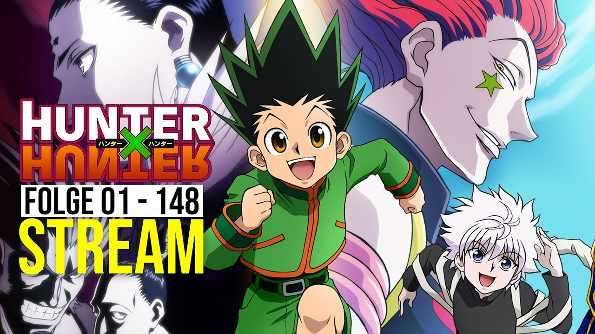

Eiichiro Oda
Eiichiro Oda (yap.Ode către Eyichiro, n. 1 ianuarie 1975) este un artist manga japonez, creatorul seriei One Piece (1997-prezent). One Piece este cea mai bine vândută manga din istorie și cea mai bine vândută serie de benzi desenate tipărite în volum, ceea ce, la rândul său, face din Ode unul dintre cei mai bine vânduți autori de ficțiune. Popularitatea seriei a dus la numele Oda ca unul dintre artiștii manga care au schimbat istoria manga.
Eiichiro Oda s-a născut la 1 ianuarie 1975 în Kumamoto, Japonia. El a spus că la vârsta de patru ani, el a decis să devină un artist manga pentru a evita să obțină un "loc de muncă real." Cea mai mare influență a sa este Akira Toriyama și seria sa Dragon Ball. El își amintește că interesul său pentru pirați a fost probabil declanșat de o serie animată populară numită Viking Wiki.
El a introdus un personaj numit Pandaman pentru manga clasică de lupte Yudetamago "Kinnikuman". Pandaman nu a fost folosit doar într-unul din capitolele manga, dar mai târziu a revenit ca un personaj cameo recurent în lucrările proprii ale Oda.
Cariera
La vârsta de 17 ani, Oda și-a prezentat lucrarea dorită!și a câștigat mai multe premii, inclusiv locul al doilea în râvnitul premiu Tezuka. Acest lucru l-a determinat să lucreze pentru revista săptămânală sh Jump, unde a lucrat inițial ca asistent artist manga/asistent în seria Shinobu Kaitani Suizan Police Gang, înainte de a se muta la Masaya Tokuhiro pe Regele Junglei Tar-chan și Mizu no Tomodachi Kappaman, ceea ce i-a dat o influență neașteptată asupra carierei sale artistice.stil.
La vârsta de 19 ani, a început să lucreze ca asistent la Nobuhiro Watsuki pe Rurouni Kenshin înainte de a primi premiul Hop Step pentru artiștii Manga emergenți. Watsuki îi mulțumește lui Oda pentru că a ajutat la crearea personajului Honjo Kamatari, care apare în Rurouni Kenshin.
În acest timp, Oda a desenat două povești de pirați numite "Romance Dawn", care au fost publicate în Akamaru Jump și, respectiv, săptămânal sh jump, la sfârșitul anului 1996. "Romance Dawn l-a prezentat pe Monkey D. Luffy ca personaj principal, care a devenit apoi personajul principal al OPEPIES.
În 1997, One Piece a început să fie publicată în săptămânalul Sh Jump și a devenit nu numai una dintre cele mai populare manga din Japonia, ci și cea mai bine vândută serie manga din toate timpurile. Până în februarie 2005, au fost vândute 100 de milioane de volume tankobon colectate, peste 200 de milioane până în februarie 2011, 320.866.000 de exemplare au fost tipărite în întreaga lume până în decembrie 2014, 430 de milioane de volume erau în circulație la nivel mondial începând cu octombrie 2017.440 de milioane de exemplare vândute începând cu mai 2018 și 450 de milioane tipărite începând cu martie 2019.
Într-un sondaj din 2008 realizat de firma de cercetare de marketing Orion, Oda a fost ales ca al cincilea cel mai preferat artist manga din Japonia. El a împărtășit acest loc cu Yoshihiro Togashi, creatorul "HUNTER x HUNTER".
Pentru cel de-al zecelea film teatral animat "lumea puternică", Oda a creat complotul filmului, a desenat peste 120 de desene pentru ghid și a insistat ca Domnul copii să ofere o melodie tematică.În plus, a fost creat un capitol special de manga, inclus în volumul 0 al volumului 0, care a fost oferit gratuit participanților la film și conținea, de asemenea, desenele sale pentru film.
Viata personala
Când era adolescent, emisiunea sa preferată de televiziune era Vikki Viking. Acesta a fost începutul fascinației sale pentru pirați, iar în jurul celui de-al doilea an de liceu a început să deseneze manga, dezvoltând idei și schițe pentru o serie de pirați, care mulți ani mai târziu au devenit o singură piesă.
Mulți mangaka Oda și-au considerat prietenul și rivalul. Printre ei s-au numărat colegii săi asistenți sub conducerea lui Nobuhiro Watsuki; Hiroyuki Takei Mikio Ito. Și după mulți ani au rămas prieteni buni. Un alt mangaka este Masashi Kishimoto.
Pentru a ilustra pagina de titlu a capitolului 766 dintr-o singură piesă, care a fost publicată în numărul 50 al săptămânalului sh Jump 2014, împreună cu ultimele două capitole din Naruto-ul lui Kishimoto, Oda a inclus un mesaj ascuns și alte omagii în artă.De asemenea, el a adus un omagiu lui Naruto în final, unde personajul lui Boruto Uzumaki face un desen al unei pălării de paie Jolly Roger pe un munte. După lansarea capitolului 1000 One Piece, mai mulți dintre rivalii oda mangaka au adus un omagiu în secțiunea de comentarii a autorului saltului săptămânal Sh centenar, felicitând Oda pentru atingerea acestei etape.
Potrivit lui Oda însuși și a editorilor săi de manga, el este un muncitor înflăcărat, un perfecționist și doarme doar trei ore pe zi în timpul unei săptămâni tipice de lucru.
Oda a donat 800 de milioane de yeni (8 milioane de dolari SUA) Prefecturii Kumamoto în 2018, după un cutremur devastator din 2016 care a afectat iconicul său castel Kumamoto. O donație de alimente de 800 de milioane de yeni a fost oferită în două cadouri separate, unul pentru 500 de milioane de yeni sub numele lui Luffy și o a doua donație de 300 de milioane de yeni. Eiichiro Oda sprijină zonele afectate de cutremur de mult timp, scrie mesaje de susținere, creează opere de artă pentru produsele locale și participă la proiectul One PIECE Kumamoto Revival.
Premii
Eiichiro Oda a primit mai multe premii și titluri. Lista premiilor sale:
- A doua jumătate a anului 1992: locul al doilea al lui Tezuka pentru Wanted!
- 1993: Premiul Hop pentru pasul Iakki iaktiv
- 2000: Finalist al Premiului Cultural Tezuka Osamu pentru o piesă
- 2001: Finalist al Premiului Cultural Tezuka Osamu pentru o piesă
- 2002: Finalist al Premiului Cultural Tezuka Osamu pentru o piesă
- 2005: Premiul Sondermann pentru Premiul Mondial al manga-ului pentru categoria A II-a
- 2006: Festivalul japonez de Arte Media 100 de selecții Manga pentru o parte
- 2008: Premiul Sondermann la categoria Manga Internațională pentru volumul 44 One Piece
- 2009: Premiul Sondermann (Premiul Internațional) - Manga pentru 48 de volume în ansamblu
- 2012: a primit Marele Premiu al celui de-al 41-lea premiu al Asociației caricaturiștilor din Japonia pentru o piesă
- 2015: Guinness World Record pentru "numărul de exemplare publicate pentru aceeași serie de benzi desenate de același autor" cu 320.866.000 de exemplare tipărite în întreaga lume până în decembrie 2014
- 2018: Premiul Onorific Al Prefecturii Kumamoto
- 2019: Cel mai popular autor de pe Yahoo! Premiile Japan Search
- 2019: inclus în lista Newsweek Japonia "100 de japonezi Respectați la nivel global"
Lucrari
Manga
Filmuri
Coperta fiecarei creatii
Căutat! (1992)
Prezentul lui Dumnezeu pentru viitor
Ikki Yako
Monștri
Romance Dawn
One Piece